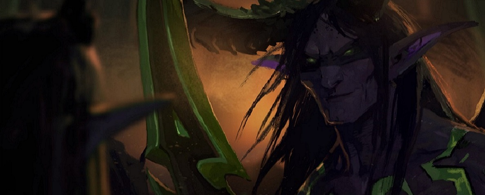

Иллидан
Иллидан Ярость Бури - один из самых известных персонажей в истории Warcraft, и хотя самая важная часть его биографии относится к событиям задолго до World of Warcraft — впервые мы его встречаем в Warcraft 3. Происхождение Иллидана берет начало в истоках самого Азерота, за 10 000 лет до нашего времени в период Войны Древних. Во время войны Иллидан отвернулся от брата и принял сторону зла, но затем снова вернулся, чтобы прийти на помощь. Это, однако, не помогло вернуть ему возлюбленную - какой бы не была его любовь к Тиранде, завоевать ее сердце она не смогла.
История Иллидана продолжалась в Запределье, Ледяных Пиках Нордскола и привела его в Черный Храм. Это не история о любви, хотя, может, с нее все началось - это повесть об одном человеке столь целеустремленном и преследующем правильность, что его одержимость заставила игнорировать все плохие поступки, совершаемые во имя справедливости.
Война Древних
Война Древних началась, когда Королева Азшара и чародеи-Высокорожденные непреднамеренно привлекли внимание Саргераса, предводителя Пылающего Легиона - в основном из-за за огромных потоков магической энергии, с которыми играли эльфы. Саргерас обратился к советнику Азшары, Ксавию, и предложил участвовать в своем великом замысле очистить мир и сделать его отражением блеска Азшары, с чем она согласилась сразу же. Вскоре, Высокорожденные спустили Пылающий Легион на кал'дореи, чьи смерти ничего не стоили на пути к созданию мира, воспевающего великолепную Азшару. Малфурион Ярость Бури прознал о ее плане, объединил несогласных и пошел войной, дабы остановить это безумие.
Иллидан был братом-близнецом Малфуриона, у которого был дар друидизма - у Иллидана же, наоборот, была тяга к тайной магии. Их связывало лишь одно - любовь к жрице Тиранде Шелест Ветра. И хотя Иллидан встал на опасный путь, чтобы стать лучше и впечатлить молодую жрицу, в конечном счете она выбрала Малфуриона, и это совсем не обрадовало Иллидана. Он отправился в Зин-Азшари и притворился лоялистом Королевы и Пылающего Легиона, предложив найти Душу Демона, очень могущественный артефакт. Саргерас был настолько доволен планом Иллидана, что наделил его "даром" - он выжег глаза ночному эльфу и вживил на их место пламя, способное увидеть любую магию.
Но Иллидан по-прежнему оставался верен ночным эльфам. Душа Демона была, безусловно, сильной, но она также могла закрыть портал, через который прибывали демоны. Закрыв его, Иллидан спас кал'дореи от полного уничтожения, но Тиранда была как и прежде не впечатлена. Войну окончил не Иллидан, а усилия его брата - уничтожение портала спровоцировало Раскол, катастрофическое разделение Калимдора на материки, которые известны уже нам. Поскольку мир вышел из-под контроля, Иллидану удалось наполнить семь фиалов водой из Источника Вечности, чтобы сохранить купель.
Заточение в тюрьму
Его рассуждения казались нормальными, но лишь с его точки зрения. Иллидан хотел создать новый Источник Вечности. Но зачем? Если Пылающий Легион вернется вновь, то понадобится магия, способная противостоять армии демонов. После Раскола Иллидан отправился на Вершину Хиджала и вылил три фиала в маленькое озеро. Создавая новый Источник Вечности, он привлек внимание кал'дореи. После убийства Джерода Песнь Теней Иллидан столкнулся с Малфурионом и Тирандой, провозглашенными лидерами ночных эльфов после падения Азшары.
Само собой, Малфурион был недоволен действиями Иллидана. Он сказал, что в первую очередь причиной, из-за которой пришел Пылающий Легион, была сила старого Источника. Создание нового вновь привлечет их внимание. Но Иллидан не видел твердых оснований в словах брата и был настолько убежден в правильности своего решения, что не видел иного пути. Он не раскаивался за свои действия и не жалел о создании нового Источника.
Вместо приказа казнить своего брата, Малфурион распорядился, чтобы Иллидана заключили в тюрьму Келий. Сестра Джерода, Майев Песнь Теней, предложила Малфуриону сторожить темницу, и тот согласился. Это был пожизненный приговор - учитывая тот факт, что благодаря Ноздорму, ночные эльфы стали бессмертными, Иллидана ожидало очень долгое заточение. Минуло 10 000 лет, в течение которых росла и процветала цивилизация кал'дореи, а Иллидан томился во тьме и ждал своего часа.
Освобождение
Можно было думать или надеяться, что за 10 000 лет заключения в темноте Иллидан осознал всю бездумность своих поступков, однако этого не произошло. И через 10 000 лет, когда Легион вновь попытался вторгнуться в уже Азерот, Иллидан был освобожден. Не своим братом и уж точно не Майев, а Тирандой, которая считала, что Иллидан поможет в битве с Легионом как и прежде. Она убила стражников и освободила его, на неодобрение Малфуриона - он был убежден, что даже после стольких лет его брат не изменился. Иллидан показал брату, что тот ошибается.
Он отправился на поиски Легиона в Оскверненный Лес и встретил Артаса, чемпиона Короля-Лича. Они могли бы биться вечно, но затем Иллидан спросил, что Артасу нужно в этих лесах. Бывший принц Лордерона рассказал Иллидану о Черепе Гул'дана, могущественном демоническом артефакте, сгноившем весь лес изнутри. Если череп будет уничтожен, порча отступит. Иллидан не доверял Артасу, но все же отправился на поиски Черепа - в конце концов, Артас говорил, что предмет обладает великой силой, а то, что может сделать Иллидана сильнее, должно быть у него в руках.
Смог бы он стать сильнее и остановить порчу? Так было бы лучше, особенно в глазах Тиранды. Иллидан выследил череп и вместо того, чтобы его уничтожить, раскрыл его силу и присвоил ее себе. Стал ли он могущественней? Безусловно. Но ему пришлось заплатить цену - поглощая мощь Черепа, Иллидан превратился в демона. Он разобрался с силами легиона в Оскверненном Лесу, но его трансформация вызвала отвращение у Малфуриона и не впечатлила Тиранду. Малфурион изгнал Иллидана из лесов и остался с Тирандой.
Демон
Что же до Иллидана ... он стал одним из тех существ, с которыми так рьяно сражался. И заплатил за это цену. Когда Легион был побежден, Иллидан столкнулся с Кил'джеденом, предложившим ему последний шанс послужить Легиону. Оказалось, что Артас не работал на Легион, а работал с Королем-Личем, поэтому Кил'джеден желал смерти Лича, поскольку тот стал слишком силен и вышел из-под контроля. Но Череп Гул'дана обладал странными свойствами - в нем была заключена память Гул'дана, которая помогла Иллидану ощутить мощный артефакт, за которым в свое время охотился сам орк.
Чтобы восстановить Око Саргераса, Иллидан призвал наг из глубин на поверхность земли. В стремлении отомстить ночным эльфам, предводительница наг, Леди Вайш, согласилась помочь и доставила Иллидана на Расколотые Острова к Гробнице Саргераса. Но на его пути возникла еще одна проблема. Майев Песнь Теней, разгневанная смертью своих стражей, намеревалась поймать своего узника и выследила его до Гробницы. Иллидан сбежал в Восточные Королевства, пересекая моря, но Майев шла по пятам. Сразу по прибытию Иллидан начал читать заклинание, используя Око Саргераса, чтобы буквально разорвать Нордскол и уничтожить Короля-Лича.
Малфурион ощутил это колебание и отправился с Майев положить этому конец. В пути они потеряли Тиранду и посчитали ее погибшей - или скорее объявленной мертвой со слов Майев, которая все еще обвиняла Тиранду в бегстве Иллидана. Они встретили принца Кель'таса, предводителя эльфов крови, который тоже собирался остановить Иллидана. Им удалось разрушить планы Иллидана, но Кель'тас сказал, что вопреки словам Майев Тиранда еще была жива. Стремясь оправдать себя, Иллидан бросился спасать ее и вернул к Малфуриону. Благодаря брата за помощь, Малфурион отпустил его - до тех пор, пока он не угрожал ночным эльфам. Иллидан принял милость своего брата, открыл портал в Запределье и исчез.
Запределье
Почему же Иллидан отправился в Запределье? Потому что он понимал, что подвел Легион, его смерть была лишь вопросом времени, поэтому ему нужно было отыскать такое место, где его никто не найдет. Майев продолжила охоту на Иллидана в Запределье и поймала его. Но его освободили Кель'тас и Вайш - Кель'тас искал лекарство от зависимости перед магией для своего народа, посему он предложил свои услуги Иллидану в обмен на него. Иллидан неуклонно сражался с Легионом, чтобы освободить Дренор от его хватки, дойдя в конечном счете до Черного Храма. Там он встретил Акаму, сломленного дренея, который присоединился к Иллидану, если это означало конец правлению Легиона.
Они уже собирались триумфально объявить Черный Храм своим домом, как внезапно появился Кил'джеден. Иллидан скрыл свою неосмотрительность и заявил, что он собирает силы для новой удара по Королю-Личу. Кил'джеден дал ему еще один шанс проявить себя и отправил его в Нордскол сдержать свое слово. Иллидан был сражен Артасом и остался умирать, в то время как бывший принц Лордерона взошел на трон и стал Королем-Личем. Вайш и Кель'тас забрали Иллидана в Запределье.
С этой точки зрения у Иллидана было мало шансов выступить против Легиона. У него были союзники, но их слово было шатким - в конце концов, Кель'тас отвернулся от Иллидана и принял сторону Легиона. Удерживавшаяся в заточении Майев была освобождена Акамой и героями. Для Акамы было довольно правления Иллидана. Он хотел вернуть хотя бы частицу былого величия Черному Храму. Ближе к концу Burning Crusade герои столкнулись с Иллиданом на крыше Черного Храма и с помощью Майев убили его.
Наследие
Иллидан провел свою жизнь, пытаясь быть героем - таким как хотела Тиранда, каким он нужен был ночным эльфам - и делал все возможное, чтобы стать сильнее. Но он пропустил тот факт, что у всего есть своя цена. И в конце концов Иллидан стал служить существам, которых поклялся истреблять. Он служил Легиону и даже пытался обратить демонов против бывших хозяев. В масштабе Азерота он никогда не был злодеем вроде Смертокрыла, который желал уничтожения мира, Короля-Лича, желавшего погрузить мир в эпоху нежити или Азшары, желавшей видеть мир в собственном блеске.
Он был всего лишь эльфом, отчаянно желавшим стать самым лучшим, чтобы впечатлить своих друзей и возлюбленную. Когда он понял, что этого никогда не произойдет, то отступил в Черный Храм и решил пережить судьбу, которая, в конечном счете, настигла его.
В самом ли деле мертв Иллидан? Это действительно хороший вопрос, особенно учитывая твиты Алекса Афрасиаби касательно демонов. Согласно твиту, демоны не могут умереть, они просто возвращаются в Круговерть Пустоты. Хотя мы и видели тело, могло бы просто получиться, что Иллидан выжил - и последние несколько лет провел, томясь в Круговерти Пустоты и разрывая поводок, на котором Легион продолжает его держать. Он по-прежнему ищет возможность освободиться.
Мир все еще нуждается в спасении.